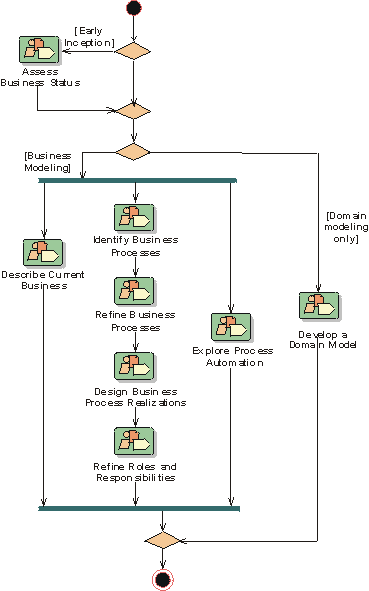

Development Case: Business Modeling
In this example the whole of the Business Modeling Discipline is optional. To this end all of the artifacts have been classified as "could".
Discipline 
There are no formal changes to the Business Modeling Discipline - it is used as is (see the RUP Overview: Business Modeling).

Artifacts
Notes on the Artifacts
None.
Reports
Notes on the Reports
No SoDA templates or Tool Mentors are supplied for the Business Actor or Business Use Case Reports. It is suggested that the standard Actor and Use Case Reports (from the Requirements report set) are used.
Additional Review Procedures
None.
Other Issues
None.
Configuring The Discipline
When configuring the Business Modeling Discipline help can be found in:
- RUP Discipline: Environment
- RUP Activity: Develop Development Case
- RUP Guidelines: Important Decisions in Business Modeling
You should also familiarize yourself with: